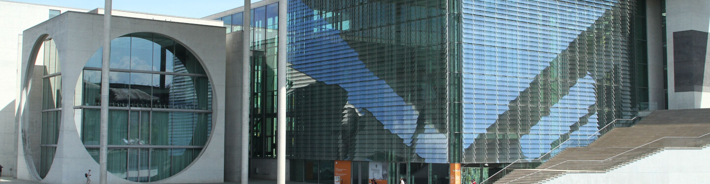
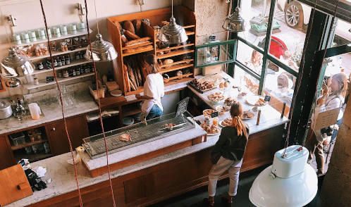
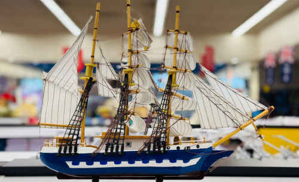

Contact UsVisit Us
Opening Hours
Museum
- Monday
- Tuesday
- Wednesday
- Thursday
- Friday
- Saturday
- Sunday
- Closed
- 14:00-19:00
- 14:00-19:00
- 11:00-16:00
- 12:00-17:00
- 11:00-16:00
- 11:00-16:00
Cafe
- Monday
- Tuesday
- Wednesday
- Thursday
- Friday
- Saturday
- Sunday
- Closed
- 12:00-19:00
- 12:00-19:00
- 11:00-18:00
- 12:00-19:00
- 11:00-18:00
- 11:00-17:00
The museum gift shop follows the museum´s opening hours.
Opening hours may vary throughout the year.
Tickets
Prices
- Children (0-5 years)
- Children (6-15 years)
- Young adults (16-20 years)
- Adults
- Seniors (65+ years)
- Free
- 120 kr
- 150 kr
- 190 kr
- 150 kr
Groups and Schools
- Adults (min. 10 people)
- Students/ Seniors / Children
- Pupils year 1-7
- Pupils year 8-10
- 150 kr per person
- 100 kr per person
- 20 kr per pupil
- 25 kr per pupil
Tickets can be purchased at the museum or online.
Students get a 20% discount if they can show a valid student ID.
Where are we located
The museum is located on the same location as the old shipyard for Fredrikstad Mekaniske Verksted in Fredrikstad.
Address: Dokka 1, 1601 Fredrikstad
Click on the map to get your exact directions
There are different options for public transportation,
the easiest being the bus that passes several times every hour.
Click here for timetables and information.
Parking
We can offer a large car park with 4 hour free parking for our visitors. The car park also has its own designated places for busses.
The car park is located right next to the museum itself making it easily accessible.
There are several places close to the entrance for accessible parking for those with a parking permit.
Click here to see a map over our car park and how to access it.
Facilities
We want every visitor to enjoy a comfortable and welcoming museum experience.
The museum is designed to be accessible for families with young children, wheelchair users, and visitors with a wide range of accessibility needs.
Step-free access, lifts, accessible toilets, baby changing facilities, and family-friendly spaces help ensure that everyone can explore the exhibitions with ease.
We also have a cozy cafe and our own shop placed within the museum.
Cafe
Visit our cozy cafe with a range of coffee, tea and baked goods. Many options for both the grown-ups and the kids.
Menu
Gift Shop
In our Gift Shop you can find a gift, a memory to bring with you or choose from our many miniature industrial models.
Assortment